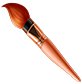

Задание. Flexbox-ролик «Иду за мечтой» (вариант 1)
Ролик собран на Flexbox: блок разбит на шапку с надписью, фигуру художника
и декоративные элементы, которые выравниваются свойствами
justify-content и align-items. Анимация ходьбы
сделана сменой трёх кадров через @keyframes, полёт звезды и кисти —
через offset-path.
Как смотреть: наведите курсор на ролик — художник пойдёт, появятся звезда и надпись. Наведите курсор на звезду — она закрутится и полетит по странной траектории. Зажмите кнопку мыши на ролике — появятся кисть и фраза «Мечта рядом!», а весь блок начнёт пульсировать.
Иду за мечтой
Мечта рядом!


